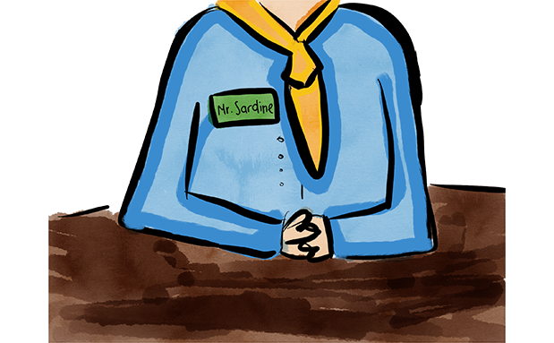

Willy spoke with Mr. Sardine, the mastermind behind this industry, and that's where they fell in love with him and his projects. Willy convinced the top executives in Manhattan that his turtle conservation project was 100% efficient.

Back